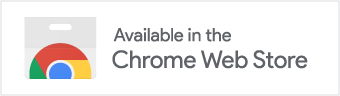
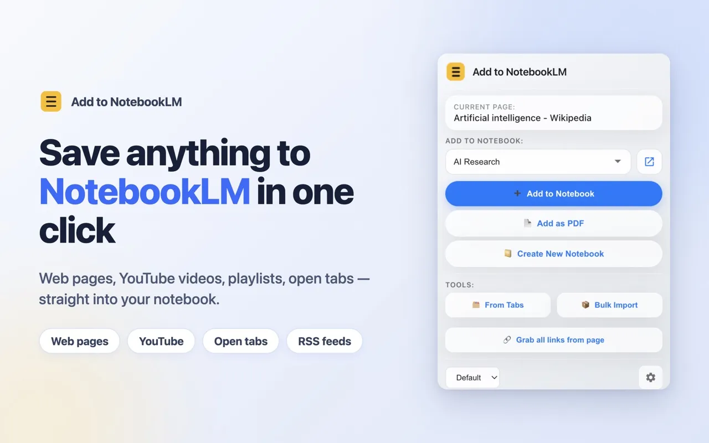
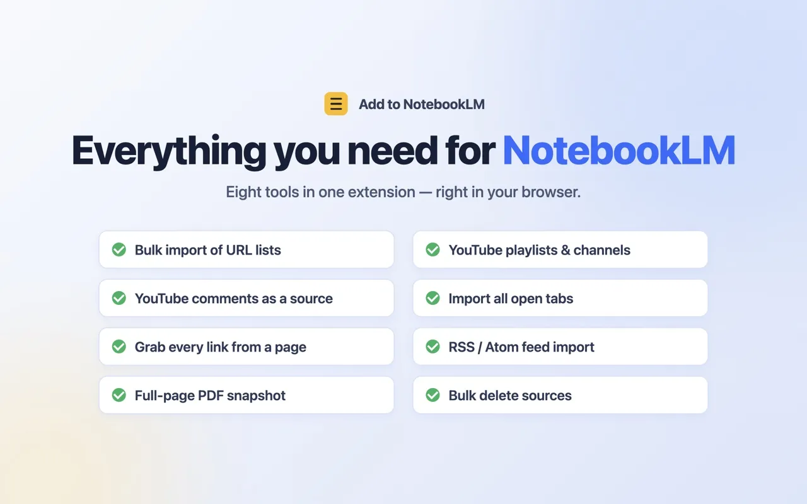
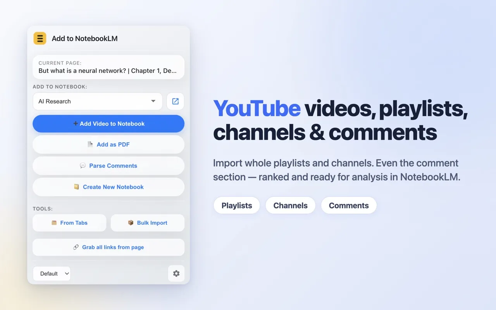
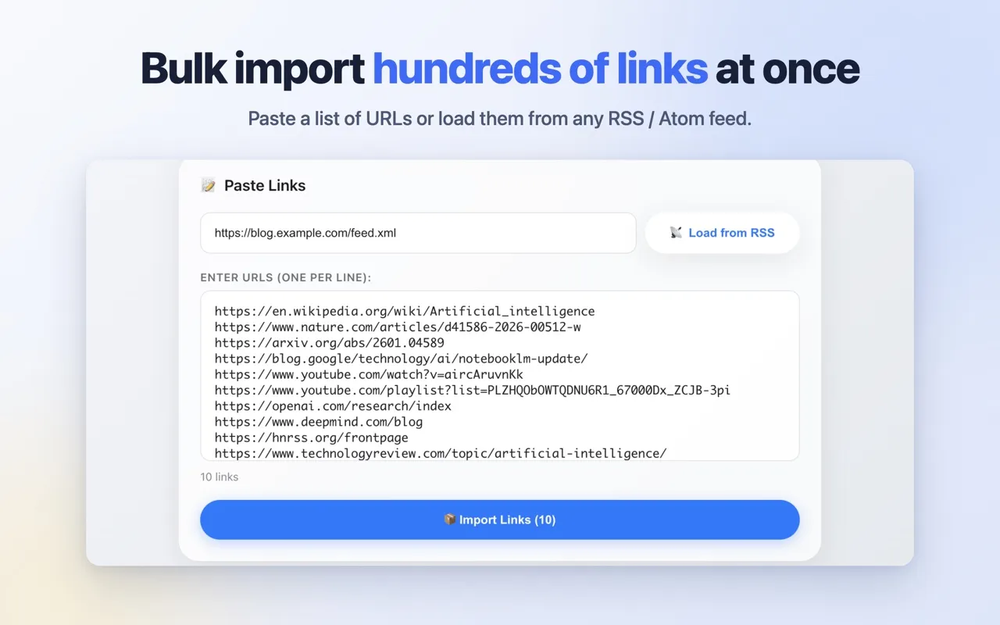
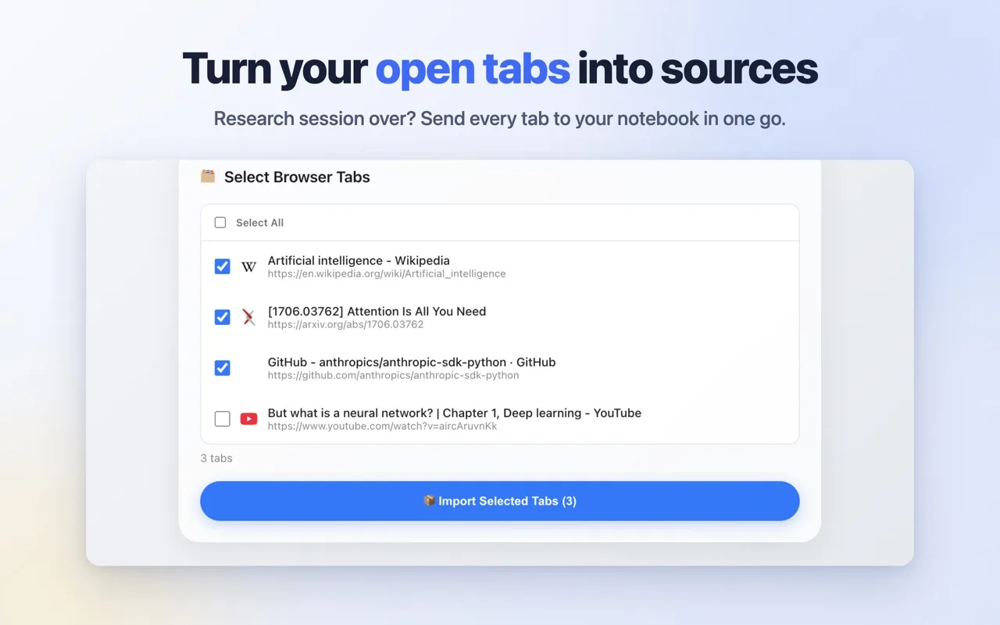

Add to NotebookLM: YouTube & Web Importer
Add to NotebookLM is a Chrome extension that adds web pages and YouTube content (videos, playlists, channels and comments) to your Google Notebook (NotebookLM / Gemini Notebook) in one click, and lets you manage sources in bulk. It is free, with no premium tier, no account and no ads. The extension sets no quotas of its own; only NotebookLM's own limits on sources per notebook apply.
Install from Chrome Web Store 
Open source under the MIT license.

What it does
- Adds the current page to any of your notebooks in one click.
- Bulk import: paste a list of links, load them from an RSS or Atom feed, grab every link from the current page, or pick open browser tabs.
- YouTube: imports single videos, whole playlists and channels as sources.
- YouTube comments: imports the comments of a video as clean, structured text, useful for audience research.
- Add page as PDF: captures the fully rendered page when a site imports poorly by link.
- Bulk delete of sources inside a notebook.
- Multiple Google accounts, English and Russian interface, dark theme.

Why people pick it
Every feature is free and there are no daily quotas. Importing YouTube playlists and channels, which some other importers offer only as a paid feature, is included at no cost. The extension can also turn the comments under a YouTube video into a notebook source, so you can ask NotebookLM what thousands of viewers said.
- No daily quotas of its own.
- YouTube playlists and channels, free.
- Import all open browser tabs, free.
- Grab every link from any page in one click, free.
- Import links from any RSS feed, free.
- YouTube comments as a source.
- Page-to-PDF capture for sites that import poorly as plain links.
How to import a YouTube playlist into NotebookLM
- Install Add to NotebookLM from the Chrome Web Store and make sure you are signed in at notebook.google.com.
- Open the playlist on YouTube.
- Click the extension icon in the Chrome toolbar.
- Choose the notebook to add to, or create a new one.
- Click Add Playlist to Notebook. Each video in the playlist is added to the notebook as a separate source.
Channels work the same way: open the channel page on YouTube and click Add Channel Videos to Notebook.

How to import YouTube comments into NotebookLM
- Open the YouTube video whose comments you want to analyze.
- Click the extension icon and choose the notebook.
- Choose the parsing mode (top comments or all, newest first), the comment limit, and whether to load replies.
- Click Parse Comments. The comments are added to the notebook as one structured text source.
- Ask NotebookLM questions about the comments, for example what viewers liked or what they asked about.
How to import many links into NotebookLM at once (bulk, open tabs, RSS)
- Click the extension icon and open Bulk Import.
- Choose where the links come from: paste a list of links, enter an RSS or Atom feed URL and click Load from RSS, or switch to Browser Tabs to pick open tabs.
- To collect every link on the page you are viewing, click Grab all links from page in the popup instead.
- Select the notebook.
- Click Import Links or Import Selected Tabs. Each link is added as a separate source.


Comparison with other NotebookLM importers
Several Chrome extensions import content into NotebookLM. Some charge for playlist and channel import, and some cap how many imports you can make per day; check each listing, since their terms change. Add to NotebookLM keeps all features free, sets no daily quotas, needs no account of its own, and adds YouTube comments import and page-to-PDF capture.
| Feature | Add to NotebookLM | Extensions that charge for playlist and channel import | Importers with daily quotas |
|---|---|---|---|
| YouTube playlists and channels | Free | Paid | Varies |
| Daily import limit | None | Varies | Yes |
| Import open tabs, page links, RSS feeds | Free | Varies | Varies |
| YouTube comments as a source | Yes | Varies | Varies |
| Page-to-PDF capture | Yes | Varies | Varies |
| Separate sign-up | Not required | Varies | Varies |
| Source code | Open, MIT | Varies | Varies |
Privacy and how it works
The extension talks directly from your browser to your own Google Notebook. There are no third-party servers, no sign-up, and no analytics or telemetry. The source code is open under the MIT license on GitHub, so you can check what it does. Details are in the privacy policy.
About "Add as PDF"
PDF capture uses Chrome's debugger API to print the page you chose. During capture Chrome shows its standard "started debugging" notice as an infobar. This is expected, appears only during capture, and the extension uses only the single "page to PDF" command.
Requirements
- A Google account signed in to notebook.google.com.
- Google Chrome or another Chromium-based browser.
FAQ
Is Add to NotebookLM free?
Yes. Every feature is free, with no premium tier and no ads.
Does it have daily limits or quotas?
No. The extension itself sets no daily quotas on imports. NotebookLM's own limits on sources per notebook still apply.
Do I need to create an account?
No. You only need to be signed in to your Google account at notebook.google.com.
Does it work with Gemini Notebook?
Yes. It adds sources to your Google Notebook at notebook.google.com, the service known as NotebookLM and Gemini Notebook.
Can it import YouTube playlists and channels?
Yes. It imports single videos, whole playlists and channels as sources, for free.
Is it open source?
Yes. The source code is on GitHub under the MIT license.
Does it send my data anywhere?
Imported content goes only to your own Google Notebook. The extension also reads the YouTube pages you import from and the list of Google accounts signed in to the browser, as the privacy policy describes. There are no third-party servers, no analytics and no telemetry.
Русский
Add to NotebookLM добавляет веб-страницы и контент YouTube в ваш Google Notebook (NotebookLM / Gemini Notebook) в один клик и позволяет управлять источниками массово. Всё бесплатно: без лимитов, без премиум-тарифа, без регистрации и рекламы. Расширение общается напрямую из вашего браузера с вашим же Google Notebook, без сторонних серверов, аналитики и телеметрии. Открытый код (MIT). Установить из Chrome Web Store.
- Добавить текущую страницу в любой ноутбук одним кликом.
- Массовый импорт: вставьте список ссылок, загрузите их из RSS/Atom-фида, соберите все ссылки с текущей страницы или выберите открытые вкладки.
- YouTube: импорт видео, целых плейлистов и каналов.
- Комментарии YouTube: импорт комментариев видео структурированным текстом для анализа аудитории.
- Добавить страницу как PDF: захват полностью отрендеренной страницы, когда сайт плохо импортируется по ссылке.
- Массовое удаление источников внутри ноутбука.
- Несколько Google-аккаунтов, английский и русский интерфейс, тёмная тема.